Code
pacman::p_load(spdep, tmap, sf, ClustGeo, parallel,
ggpubr, cluster, factoextra, NbClust, ggplot2, pheatmap,
heatmaply, corrplot, psych, tidyverse, GGally, spacetime, reader)Zhang Chenbin
Tourism is a major industry in Thailand, contributing around 20% of the country’s GDP. In 2019, tourism generated 90 billion US dollars in revenue from both domestic and international visitors. However, due to the COVID-19 pandemic, this figure plummeted to just 24 billion US dollars in 2020. The figure below illustrates the total tourism revenue from January 2019 to February 2023, showing a gradual recovery in the sector starting from September 2021.
As an enthusiastic newcomer to geospatial analytics, you are eager to explore whether the key indicators of Thailand’s tourism economy are independent of spatial and spatio-temporal factors. If there is evidence of spatial and spatio-temporal dependence, your next step would be to identify the locations of clusters and outliers, as well as pinpoint emerging hot spots and cold spots.
The study area encompasses the whole of Thailand, including its diverse regions and provinces. This nationwide approach allows for a detailed analysis of tourism-related indicators across both urban and rural areas, highlighting spatial and temporal trends.
spdep: Provides functions for spatial dependence, spatial autocorrelation, and spatial regression analysis.
tmap: A powerful package for creating thematic maps and visualizing spatial data.
sf: Handles simple feature geometries and is widely used for manipulating and analyzing spatial data in R.
ClustGeo: Implements hierarchical clustering that incorporates both spatial and non-spatial variables.
ggpubr: Simplifies the process of creating and customizing publication-ready ggplot2-based plots.
cluster: Provides clustering algorithms such as k-means, hierarchical clustering, and more.
factoextra: Offers tools to extract and visualize the results of multivariate data analyses, especially clustering.
NbClust: Helps determine the optimal number of clusters in a dataset using various indices and methods.
ggplot2: A versatile package for creating complex and customizable graphics based on the grammar of graphics.
pheatmap: Creates pretty heatmaps with annotations and clustering options for data visualization.
heatmaply: An interactive heatmap generation tool that supports hierarchical clustering and offers rich interactivity.
corrplot: Provides visualization techniques for displaying correlation matrices.
psych: Includes tools for psychological, psychometric, and personality research, with support for factor analysis, reliability, and descriptive statistics.
tidyverse: A collection of packages designed for data manipulation, visualization, and analysis using a consistent syntax.
GGally: Extends ggplot2 to provide additional tools for visualizing multivariate relationships, such as pair plots.
spacetime: Allows for the manipulation and analysis of spatio-temporal data, integrating space and time in analysis.
reader: A simple package for reading in data, supporting various formats like CSV, Excel, and more.
For the purpose of this take-home exercise, two data sets shall be used, they are:
Thailand Domestic Tourism Statistics at Kaggle. You are required to use version 2 of the data set.
Thailand - Subnational Administrative Boundaries at HDX. You are required to use the province boundary data set.
Reading layer `tha_admbnda_adm1_rtsd_20220121' from data source
`D:\cbzhang2023\ISSS626-1\Take-home_Ex\Take-home_Ex02\data'
using driver `ESRI Shapefile'
Simple feature collection with 77 features and 16 fields
Geometry type: MULTIPOLYGON
Dimension: XY
Bounding box: xmin: 97.34336 ymin: 5.613038 xmax: 105.637 ymax: 20.46507
Geodetic CRS: WGS 84name_mapping <- c(
"Lopburi" = "Lop Buri",
"Chonburi" = "Chon Buri",
"Prachinburi" = "Prachin Buri",
"Sisaket" = "Si Sa Ket",
"Nong Bua Lamphu" = "Nong Bua Lam Phu",
"Phang Nga" = "Phangnga",
"Buriram" = "Buri Ram",
"Chainat" = "Chai Nat"
)
thailand_domestic_tourism_2019_2023_ver2 <- thailand_domestic_tourism_2019_2023_ver2 %>%
mutate(province_eng = recode(province_eng, !!!name_mapping)) date province_thai province_eng region_thai
Min. :2019-01-01 Length:30800 Length:30800 Length:30800
1st Qu.:2020-01-01 Class :character Class :character Class :character
Median :2021-01-16 Mode :character Mode :character Mode :character
Mean :2021-01-15
3rd Qu.:2022-02-01
Max. :2023-02-01
region_eng variable value
Length:30800 Length:30800 Min. :-4.250e+03
Class :character Class :character 1st Qu.: 1.740e+03
Mode :character Mode :character Median : 9.335e+04
Mean : 3.360e+08
3rd Qu.: 1.817e+07
Max. : 1.103e+11 thailand_domestic_tourism_2019_2023_ver2 %>%
group_by(province_eng) %>%
summarise(mean_value = mean(value, na.rm = TRUE)) %>%
ggplot(aes(x = reorder(province_eng, mean_value), y = mean_value)) +
geom_col(fill = "lightblue") +
coord_flip() +
labs(title = "Mean Tourism Economy by Province", x = "Province", y = "Mean Value")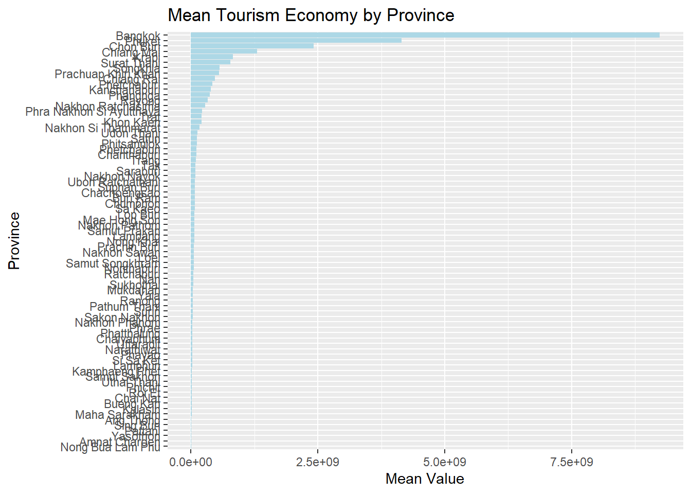
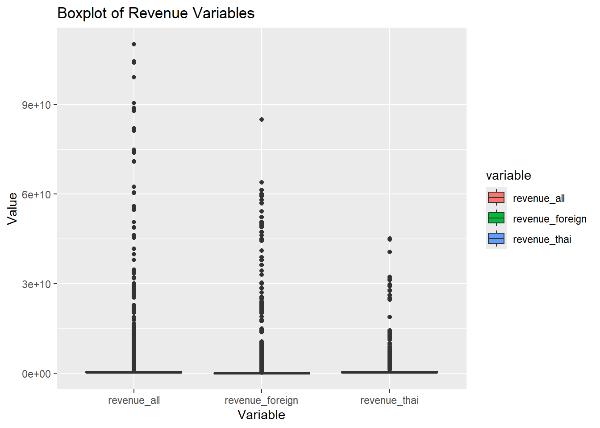
ggplot(thailand_domestic_tourism_2019_2023_ver2 %>%
filter(variable %in% c("no_tourist_all", "no_tourist_foreign", "no_tourist_stay", "no_tourist_thai", "ratio_tourist_stay")),
aes(x = variable, y = value, fill = variable)) +
geom_boxplot() +
labs(title = "Boxplot of Tourist Numbers Variables", x = "Variable", y = "Value")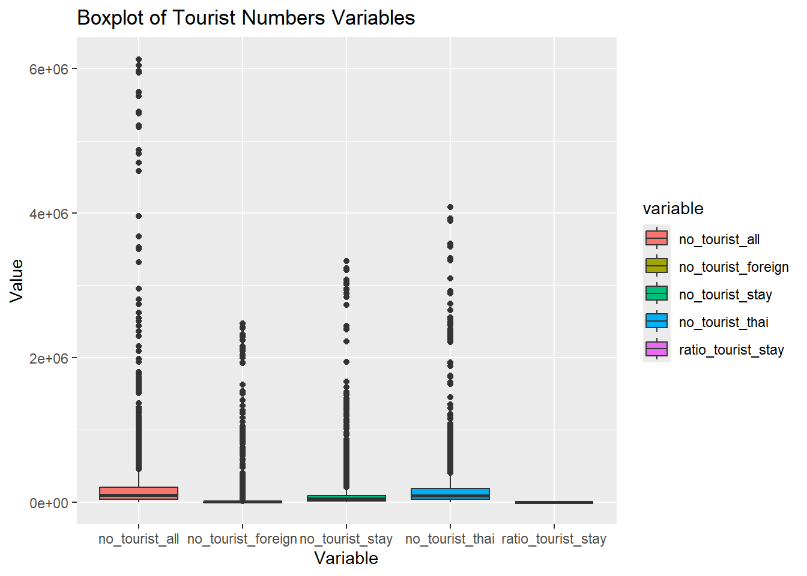
The boxplot visualizes the distribution of various tourist-related variables.From this plot, it is evident that the variables exhibit different ranges and distributions, with significant outliers. Splitting thevariable` column is crucial in order to analyze each category separately, as it allows for a clearer comparison of their respective distributions. By doing so, patterns specific to total tourists, foreign tourists, domestic tourists, and the ratio of staying tourists can be more easily identified, enabling a more detailed and meaningful interpretation of the tourism data.
This code reshapes the thailand_domestic_tourism_2019_2023_ver2 dataset from a long format to a wide format using the pivot_wider function. The names_from argument specifies that the values in the variable column will be used as new column names, while values_from indicates that the corresponding data for each variable will be taken from the value column.
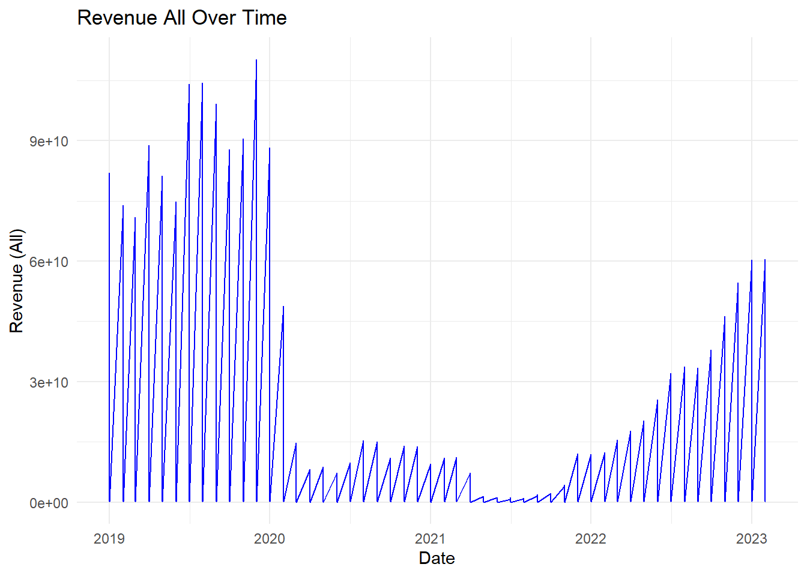
This code performs a spatial join to combine tourism economic data (tourism_economy_sf) with geographical data (adm1). The first step uses st_join to merge these datasets based on their spatial relationships, ensuring that the geographical data (geometry column) is correctly associated with the tourism data. After the spatial join, the st_drop_geometry function is applied to df_geo, removing the spatial (geometry) attributes from the resulting dataset, leaving only the non-spatial data for further analysis. This approach allows for the integration of spatial and tourism-related information while simplifying the dataset for non-spatial analysis.
numeric_columns <- c("no_tourist_stay", "no_tourist_all", "no_tourist_thai",
"no_tourist_foreign", "revenue_all", "revenue_thai",
"revenue_foreign")
numeric_data <- tourism_economy_sf %>%
st_drop_geometry() %>%
select(all_of(numeric_columns)) %>%
mutate(across(everything(), as.numeric))
correlation_matrix <- cor(numeric_data, use = "complete.obs")
corrplot(correlation_matrix, method = "ellipse", type = "upper",
tl.col = "black", tl.srt = 45, addCoef.col = "black")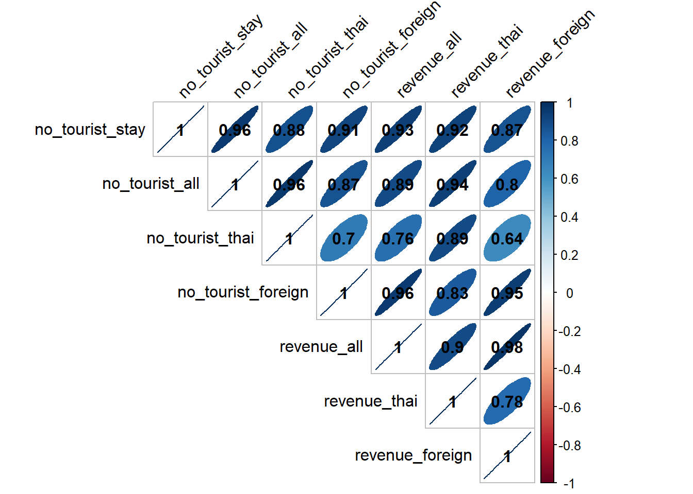
This code calculates and visualizes the correlation between selected tourism-related numeric variables. First, it selects relevant numeric columns from the tourism_economy_sf dataset, excluding the geometry column, and ensures they are of numeric type. A correlation matrix is then computed using cor(), capturing the relationships between variables like tourist numbers and revenues. Finally, the corrplot function visualizes the matrix with an “ellipse” method, displaying the correlation strength and direction, along with coefficient labels. This provides insights into how the variables are interrelated.
numeric_columns <- c("no_tourist_stay", "no_tourist_all", "no_tourist_thai",
"no_tourist_foreign", "revenue_all", "revenue_thai",
"revenue_foreign")
numeric_data <- tourism_economy_sf %>%
st_drop_geometry() %>%
select(province_eng, all_of(numeric_columns)) %>%
group_by(province_eng) %>%
summarise(across(everything(), mean, na.rm = TRUE))
numeric_data_scaled <- scale(numeric_data[,-1]) 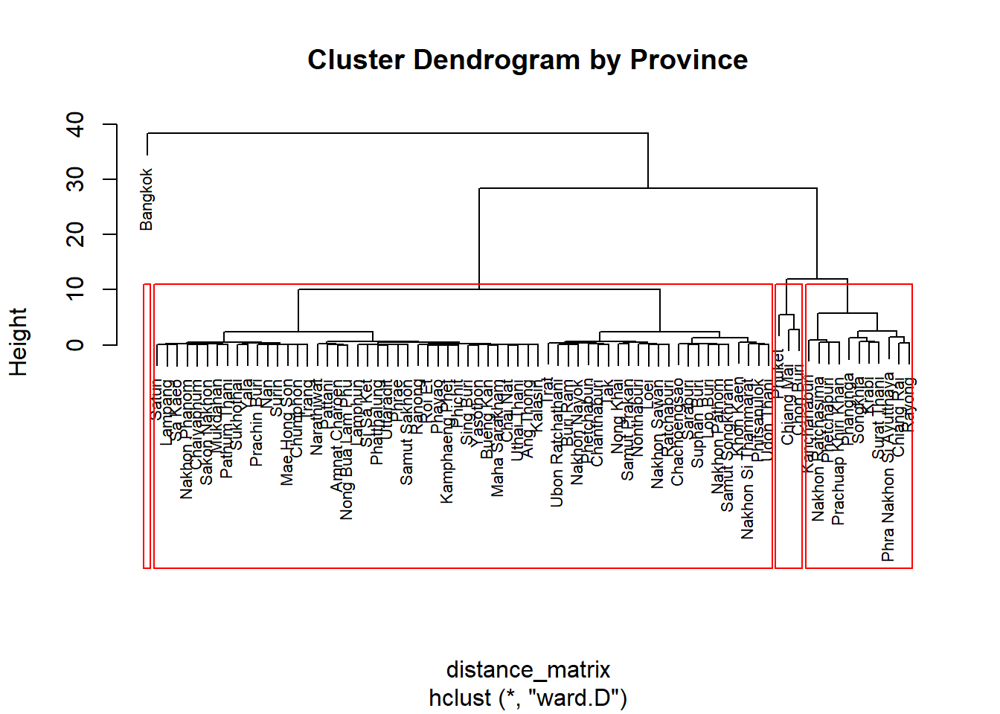
we conduct hierarchical clustering on tourism-related data for Thai provinces to identify patterns and groupings. We begin by selecting key numeric columns, such as tourist numbers and revenue data, from the tourism_economy_sf dataset, excluding the geometry column. These columns are grouped by province, and the mean values for each variable are calculated to provide a provincial summary. The data is then standardized using scale() to ensure comparability across variables. A Euclidean distance matrix is computed to measure dissimilarities between provinces, and hierarchical clustering is performed using the ward.D method, which minimizes within-cluster variance. The clustering results are visualized through a dendrogram, where four clusters are highlighted, allowing for visual inspection of provincial groupings. Lastly, we calculate agglomerative coefficients for different clustering methods (average, single, complete, ward) using the agnes() function. These coefficients help assess the clustering effectiveness for each method, providing insights into the most suitable clustering approach for the tourism data.
numeric_columns <- c("no_tourist_stay", "no_tourist_all", "no_tourist_thai",
"no_tourist_foreign", "revenue_all", "revenue_thai",
"revenue_foreign")
numeric_data <- tourism_economy_sf %>%
st_drop_geometry() %>%
dplyr::select(all_of(numeric_columns)) %>%
mutate(across(everything(), as.numeric))
dist_matrix <- dist(scale(numeric_data), method = "euclidean")In this part of the analysis, we prepare the data and apply hierarchical clustering using the Ward method. We begin by selecting key numeric columns related to tourism (e.g., tourist numbers and revenue) from the tourism_economy_sf dataset, while excluding the spatial geometry column using st_drop_geometry(). The selected columns are then converted to numeric format to ensure consistency. After that, we compute a Euclidean distance matrix using the dist() function, standardizing the data with scale() to ensure comparability across variables. This distance matrix captures the dissimilarities between provinces based on their tourism indicators. Finally, we perform hierarchical clustering using the hclust() function with the ward.D method, which minimizes within-cluster variance to identify compact and distinct clusters.
In this section, we use the k-means algorithm to determine the optimal number of clusters for the tourism data. The clusGap() function is employed to compute the Gap Statistic, which compares the total within-cluster variation for different numbers of clusters (up to a maximum of 10 in this case). By running the k-means algorithm multiple times (B = 100), the Gap Statistic evaluates how much the clustering improves relative to a random distribution of the data. The results are then visualized with a plot, allowing us to identify the optimal number of clusters based on where the Gap Statistic reaches its maximum, indicating the best fit for the data.
dist_matrix <- dist(scale(numeric_data), method = "euclidean")
hclust_model <- hclust(dist_matrix, method = "ward.D")
plot(hclust_model, labels = tourism_economy_sf$province_eng, main = "Cluster Dendrogram by Province", sub = "", xlab = "", cex = 0.6)
rect.hclust(hclust_model, k = 4, border = "red")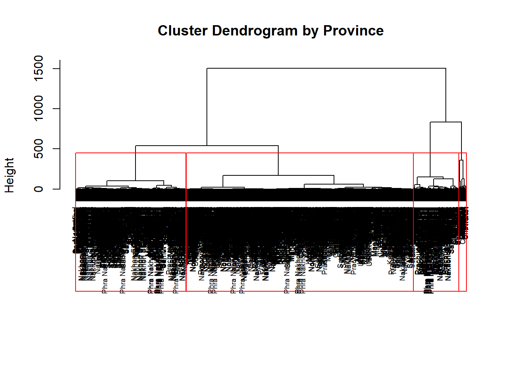
This section performs hierarchical clustering on tourism-related data and visualizes the results. A Euclidean distance matrix is computed from the standardized numeric_data, ensuring consistent scale across variables. We then apply the ward.D method for hierarchical clustering, which minimizes within-cluster variance. The resulting clusters are visualized using a dendrogram, with provinces labeled to show their relationships. To further illustrate the clustering, four distinct groups are highlighted with red borders using rect.hclust(), helping to identify province groupings based on tourism characteristics.
optimal_k <- 8
kmeans_model <- kmeans(numeric_data, centers = optimal_k, nstart = 25)
tourism_economy_sf$cluster <- kmeans_model$cluster
library(tmap)
tm_shape(tourism_economy_sf) +
tm_polygons("cluster") +
tm_facets(by = "year", free.coords = FALSE) +
tm_layout(title = "Tourism Economy Clusters by Year")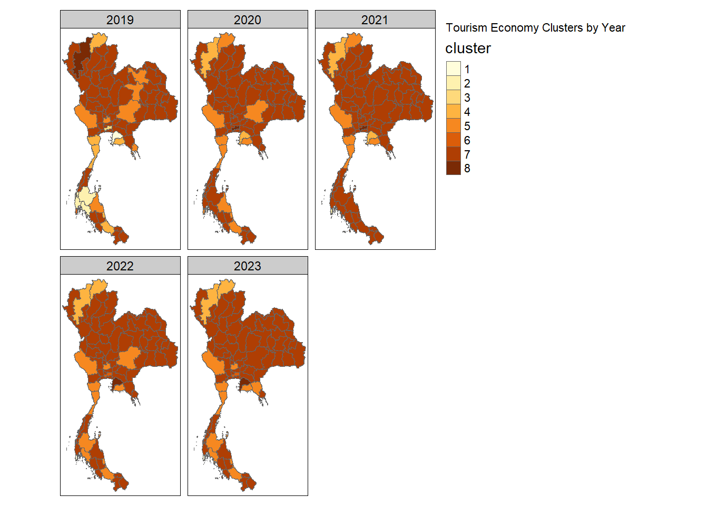
In this section, we perform K-means clustering on the tourism-related data and visualize the results spatially. The optimal number of clusters is set to 8, as determined previously. The kmeans() function is used to perform the clustering with 25 random starts to ensure stability in the clustering outcome. The resulting cluster assignments are added to the tourism_economy_sf dataset as a new column
In this section, we calculate the spatial neighbor relationships between provinces using their geometries. The poly2nb() function is applied to identify neighboring provinces based on their boundaries. The resulting neighbor object is saved as an RDS file for future use, and later reloaded for further analysis. Additionally, the centroid coordinates of each province are calculated, which provides central point locations that can be used in spatial visualizations or further spatial analyses.
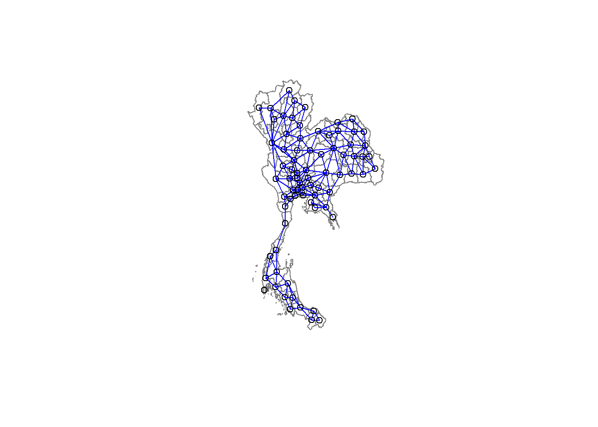
In this section, we calculate the neighbor relationships between provinces using poly2nb() and plot them alongside the province boundaries. After computing the centroids of each province, we ensure the neighbor list aligns with the number of centroid points. If the counts match, we plot the provincial boundaries and overlay the neighbor connections to visualize the spatial relationships. If not, an error is raised to signal a mismatch in the data.
geometry_data <- st_geometry(tourism_economy_sf)
years <- unique(tourism_economy_sf$year)
if (inherits(shan.nb, "nb")) {
for (year in years) {
yearly_data <- tourism_economy_sf[tourism_economy_sf$year == year, ]
valid_nb_nodes <- sapply(shan.nb, length) > 0
filtered_nb <- subset.nb(shan.nb, valid_nb_nodes)
coords <- st_coordinates(st_centroid(geometry_data[valid_nb_nodes]))
print(paste("Year:", year))
print(length(valid_nb_nodes))
print(length(yearly_data$revenue_all))
print(length(filtered_nb))
if (any(is.na(yearly_data$revenue_all))) {
stop(paste("There are NA values in the revenue_all column for year", year, ". Please clean the data."))
}
yearly_lcosts <- nbcosts(filtered_nb, yearly_data$revenue_all[valid_nb_nodes])
yearly_w <- nb2listw(filtered_nb, yearly_lcosts, style = "B")
yearly_mst <- mstree(yearly_w)
png_filename <- paste0("Minimum_Spanning_Tree_", year, ".png")
print(png_filename)
png(png_filename, width = 800, height = 800)
plot(st_geometry(geometry_data[valid_nb_nodes]), border = grey(0.5))
plot.mst(yearly_mst, coords, col = "blue", cex.lab = 0.7, cex.circles = 0.005, add = TRUE)
title(main = paste("Minimum Spanning Tree using revenue_all for year", year))
dev.off()
}
} else {
stop("The object shan.nb is not a valid nb object.")
}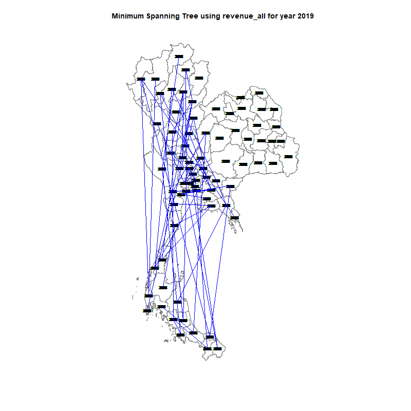
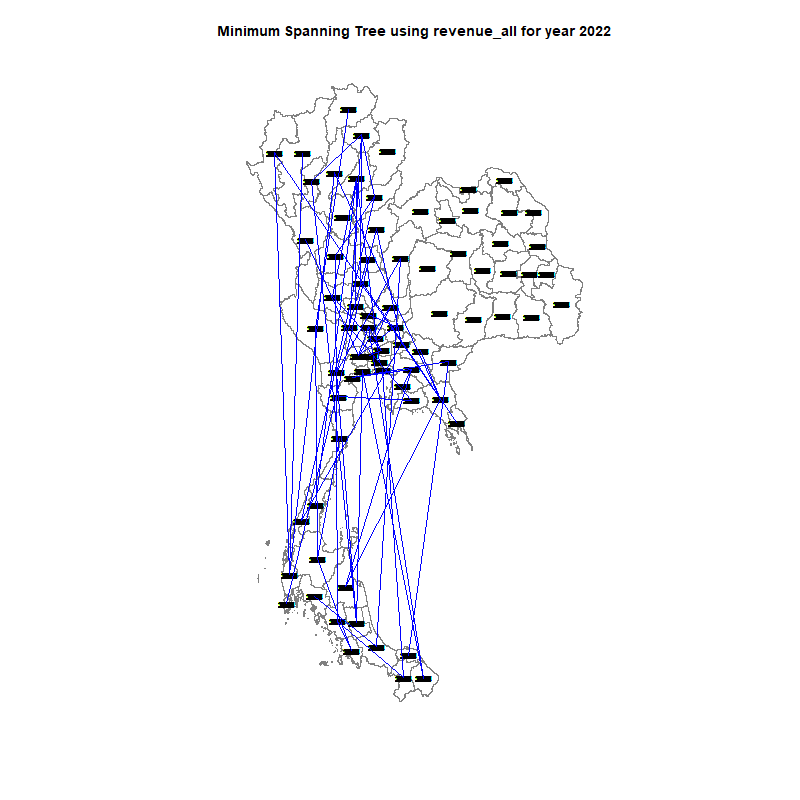
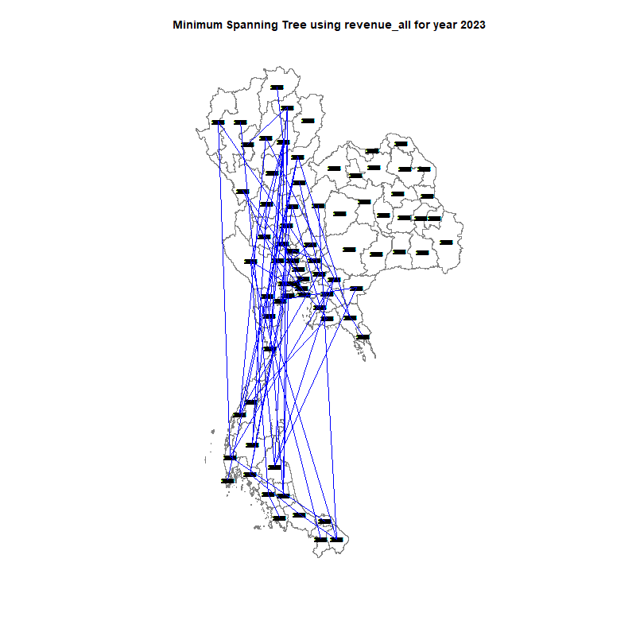
In this section, we compute the minimum spanning tree (MST) for each year based on tourism revenue data and visualize the spatial relationships between provinces. For each year, the dataset is filtered, and valid neighbor nodes are identified. The revenue data is checked for missing values before calculating edge costs between neighboring provinces. Using the calculated costs, a spatial weights matrix is created, and the MST is computed to show the most efficient connections based on tourism revenue.
data_2019 <- tourism_economy_sf[tourism_economy_sf$year == 2019, ]
data_2019_selected <- data_2019 %>%
select(province_eng, year, no_tourist_all, revenue_all)
nb_2019 <- poly2nb(data_2019_selected)
saveRDS(nb_2019, "data/nb_2019.rds")
data_2020 <- tourism_economy_sf[tourism_economy_sf$year == 2020, ]
data_2020_selected <- data_2020 %>%
select(province_eng, year, no_tourist_all, revenue_all)
nb_2020 <- poly2nb(data_2020_selected)
saveRDS(nb_2020, "data/nb_2020.rds")
data_2021 <- tourism_economy_sf[tourism_economy_sf$year == 2021, ]
data_2021_selected <- data_2021 %>%
select(province_eng, year, no_tourist_all, revenue_all)
nb_2021 <- poly2nb(data_2021_selected)
saveRDS(nb_2021, "data/nb_2021.rds")
data_2022 <- tourism_economy_sf[tourism_economy_sf$year == 2022, ]
data_2022_selected <- data_2022 %>%
select(province_eng, year, no_tourist_all, revenue_all)
nb_2022 <- poly2nb(data_2022_selected)
saveRDS(nb_2022, "data/nb_2022.rds")
data_2023 <- tourism_economy_sf[tourism_economy_sf$year == 2023, ]
data_2023_selected <- data_2023 %>%
select(province_eng, year, no_tourist_all, revenue_all)
nb_2023 <- poly2nb(data_2023_selected)
saveRDS(nb_2023, "data/nb_2023.rds")weights_list_2019 <- nb2listw(nb_2019, style = "W", zero.policy = TRUE)
year <- 2019
data_2019 <- tourism_economy_sf[tourism_economy_sf$year == year, ]
moran_i_test_2019 <- moran.test(data_2019$revenue_all, listw = weights_list_2019, zero.policy = TRUE, na.action = na.omit)
print(paste("Moran's I Test for year:", year))[1] "Moran's I Test for year: 2019"
Moran I test under randomisation
data: data_2019$revenue_all
weights: weights_list_2019
Moran I statistic standard deviate = 36.934, p-value < 2.2e-16
alternative hypothesis: greater
sample estimates:
Moran I statistic Expectation Variance
2.106651e-01 -1.083424e-03 3.286909e-05 weights_list_2020 <- nb2listw(nb_2020, style = "W", zero.policy = TRUE)
year_2020 <- 2020
data_2020 <- tourism_economy_sf[tourism_economy_sf$year == year_2020, ]
moran_i_test_2020 <- moran.test(data_2020$revenue_all, listw = weights_list_2020, zero.policy = TRUE, na.action = na.omit)
print(paste("Moran's I Test for year:", year_2020))[1] "Moran's I Test for year: 2020"
Moran I test under randomisation
data: data_2020$revenue_all
weights: weights_list_2020
Moran I statistic standard deviate = 10.933, p-value < 2.2e-16
alternative hypothesis: greater
sample estimates:
Moran I statistic Expectation Variance
5.473116e-02 -1.083424e-03 2.606302e-05 weights_list_2023 <- nb2listw(nb_2023, style = "W", zero.policy = TRUE)
year_2023 <- 2023
data_2023 <- tourism_economy_sf[tourism_economy_sf$year == year_2023, ]
moran_i_test_2023 <- moran.test(data_2023$revenue_all, listw = weights_list_2023, zero.policy = TRUE, na.action = na.omit)
print(paste("Moran's I Test for year:", year_2023))[1] "Moran's I Test for year: 2023"
Moran I test under randomisation
data: data_2023$revenue_all
weights: weights_list_2023
Moran I statistic standard deviate = 7.2781, p-value = 1.693e-13
alternative hypothesis: greater
sample estimates:
Moran I statistic Expectation Variance
0.230908633 -0.006535948 0.001064370 weights_list_2019 <- nb2listw(nb_2019, style = "W", zero.policy = TRUE)
year_2019 <- 2019
data_2019 <- tourism_economy_sf[tourism_economy_sf$year == year_2019, ]
set.seed(1234)
moran_mc_simulation_2019 <- moran.mc(data_2019$revenue_all, listw = weights_list_2019, nsim = 999, zero.policy = TRUE, na.action = na.omit)
print(paste("Monte Carlo Moran's I for year:", year_2019))[1] "Monte Carlo Moran's I for year: 2019"
Monte-Carlo simulation of Moran I
data: data_2019$revenue_all
weights: weights_list_2019
number of simulations + 1: 1000
statistic = 0.21067, observed rank = 1000, p-value = 0.001
alternative hypothesis: greaterweights_list_2020 <- nb2listw(nb_2020, style = "W", zero.policy = TRUE)
year_2020 <- 2020
data_2020 <- tourism_economy_sf[tourism_economy_sf$year == year_2020, ]
set.seed(1234)
moran_mc_simulation_2020 <- moran.mc(data_2020$revenue_all, listw = weights_list_2020, nsim = 999, zero.policy = TRUE, na.action = na.omit)
print(paste("Monte Carlo Moran's I for year:", year_2020))[1] "Monte Carlo Moran's I for year: 2020"
Monte-Carlo simulation of Moran I
data: data_2020$revenue_all
weights: weights_list_2020
number of simulations + 1: 1000
statistic = 0.054731, observed rank = 999, p-value = 0.001
alternative hypothesis: greaterweights_list_2023 <- nb2listw(nb_2023, style = "W", zero.policy = TRUE)
year_2023 <- 2023
data_2023 <- tourism_economy_sf[tourism_economy_sf$year == year_2023, ]
set.seed(1234)
moran_mc_simulation_2023 <- moran.mc(data_2023$revenue_all, listw = weights_list_2023, nsim = 999, zero.policy = TRUE, na.action = na.omit)
print(paste("Monte Carlo Moran's I for year:", year_2023))[1] "Monte Carlo Moran's I for year: 2023"
Monte-Carlo simulation of Moran I
data: data_2023$revenue_all
weights: weights_list_2023
number of simulations + 1: 1000
statistic = 0.23091, observed rank = 999, p-value = 0.001
alternative hypothesis: greaterweights_list_2019 <- nb2listw(nb_2019, style = "W", zero.policy = TRUE)
year_2019 <- 2019
data_2019 <- tourism_economy_sf[tourism_economy_sf$year == year_2019, ]
set.seed(1234)
moran_mc_simulation_2019 <- moran.mc(data_2019$revenue_all, listw = weights_list_2019, nsim = 999, zero.policy = TRUE, na.action = na.omit)
moran_mc_values_2019 <- moran_mc_simulation_2019$res[1:999]
simulation_df_2019 <- data.frame(simulated_values = moran_mc_values_2019)
moran_mean_2019 <- mean(moran_mc_values_2019)
ggplot(simulation_df_2019, aes(x = simulated_values)) +
geom_histogram(bins = 20, fill = "blue", color = "black", alpha = 0.7) +
geom_vline(xintercept = moran_mean_2019, color = "red", linetype = "dashed", size = 1) +
labs(title = paste("Monte Carlo Moran's I Simulation - Year", year_2019),
x = "Simulated Moran's I", y = "Frequency") +
theme_minimal()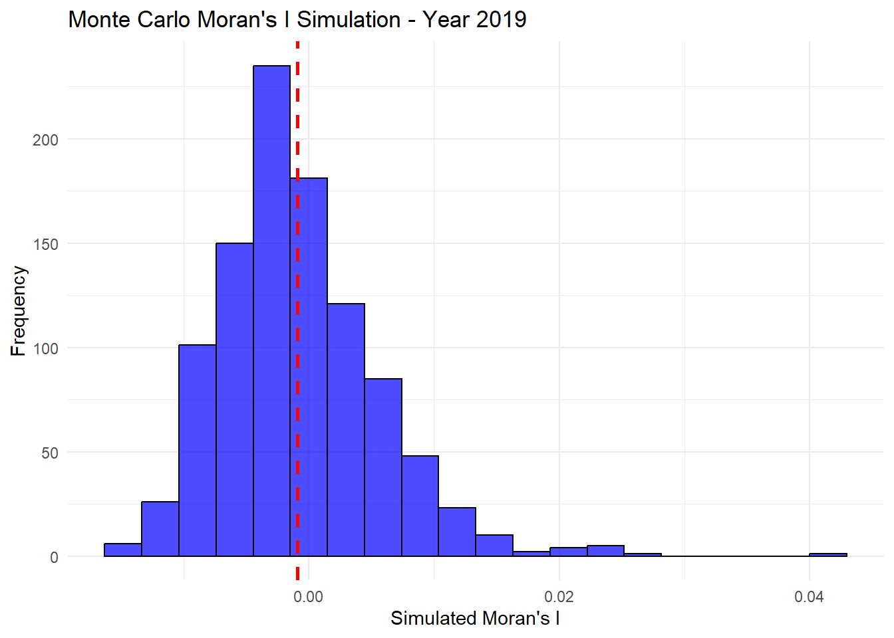
weights_list_2020 <- nb2listw(nb_2020, style = "W", zero.policy = TRUE)
year_2020 <- 2020
data_2020 <- tourism_economy_sf[tourism_economy_sf$year == year_2020, ]
set.seed(1234)
moran_mc_simulation_2020 <- moran.mc(data_2020$revenue_all, listw = weights_list_2020, nsim = 999, zero.policy = TRUE, na.action = na.omit)
moran_mc_values_2020 <- moran_mc_simulation_2020$res[1:999]
simulation_df_2020 <- data.frame(simulated_values = moran_mc_values_2020)
moran_mean_2020 <- mean(moran_mc_values_2020)
ggplot(simulation_df_2020, aes(x = simulated_values)) +
geom_histogram(bins = 20, fill = "blue", color = "black", alpha = 0.7) +
geom_vline(xintercept = moran_mean_2020, color = "red", linetype = "dashed", size = 1) +
labs(title = paste("Monte Carlo Moran's I Simulation - Year", year_2020),
x = "Simulated Moran's I", y = "Frequency") +
theme_minimal()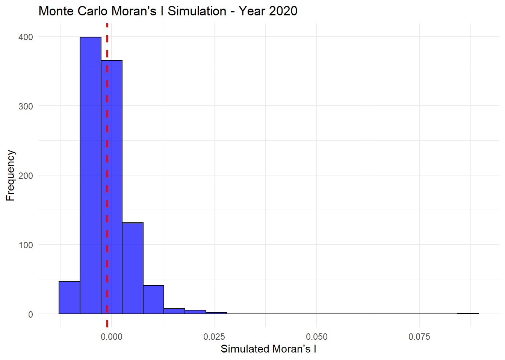
weights_list_2023 <- nb2listw(nb_2023, style = "W", zero.policy = TRUE)
year_2023 <- 2023
data_2023 <- tourism_economy_sf[tourism_economy_sf$year == year_2023, ]
set.seed(1234)
moran_mc_simulation_2023 <- moran.mc(data_2023$revenue_all, listw = weights_list_2023, nsim = 999, zero.policy = TRUE, na.action = na.omit)
moran_mc_values_2023 <- moran_mc_simulation_2023$res[1:999]
simulation_df_2023 <- data.frame(simulated_values = moran_mc_values_2023)
moran_mean_2023 <- mean(moran_mc_values_2023)
ggplot(simulation_df_2023, aes(x = simulated_values)) +
geom_histogram(bins = 20, fill = "blue", color = "black", alpha = 0.7) +
geom_vline(xintercept = moran_mean_2023, color = "red", linetype = "dashed", size = 1) +
labs(title = paste("Monte Carlo Moran's I Simulation - Year", year_2023),
x = "Simulated Moran's I", y = "Frequency") +
theme_minimal()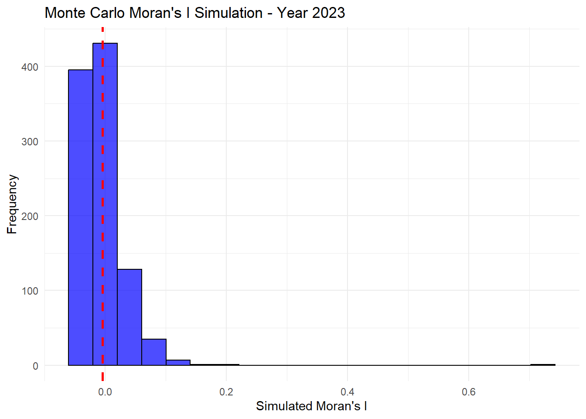
We apply spatially constrained clustering using the ClustGeo method for each year of tourism revenue data. After filtering the data by year, a proximity matrix is computed based on the revenue, and a distance matrix is derived from the spatial data. The choicealpha function is used to identify the optimal balance between spatial and non-spatial clustering constraints. We then perform hierarchical clustering with spatial constraints, and the resulting clusters are added back to the dataset. The spatial clusters are visualized using the tmap package. Additionally, hierarchical and spatially constrained clusters for each year are displayed side by side to compare the results of the two clustering methods, providing insight into how spatial constraints affect cluster formation.
analyze_geary_by_year <- function(year, nb_data) {
yearly_data <- tourism_economy_sf[tourism_economy_sf$year == year, ]
weights_list_year <- nb2listw(nb_data, style = "W", zero.policy = TRUE)
cat("Processing year:", year, "\n")
geary_c_test <- geary.test(yearly_data$revenue_all, listw = weights_list_year)
print(geary_c_test)
set.seed(1234)
geary_mc_simulation <- geary.mc(yearly_data$revenue_all, listw = weights_list_year, nsim = 999)
print(geary_mc_simulation)
hist(geary_mc_simulation$res, freq = TRUE, breaks = 20,
xlab = "Simulated Geary C",
main = paste("Monte Carlo Geary's C Simulation - Year", year))
abline(v = mean(geary_mc_simulation$res), col = "red", lwd = 2)
cat("Completed year:", year, "\n")
}
analyze_geary_by_year(2019, nb_2019) Processing year: 2019
Geary C test under randomisation
data: yearly_data$revenue_all
weights: weights_list_year
Geary C statistic standard deviate = 3.7484, p-value = 8.898e-05
alternative hypothesis: Expectation greater than statistic
sample estimates:
Geary C statistic Expectation Variance
0.8872807574 1.0000000000 0.0009042762
Monte-Carlo simulation of Geary C
data: yearly_data$revenue_all
weights: weights_list_year
number of simulations + 1: 1000
statistic = 0.88728, observed rank = 1, p-value = 0.001
alternative hypothesis: greater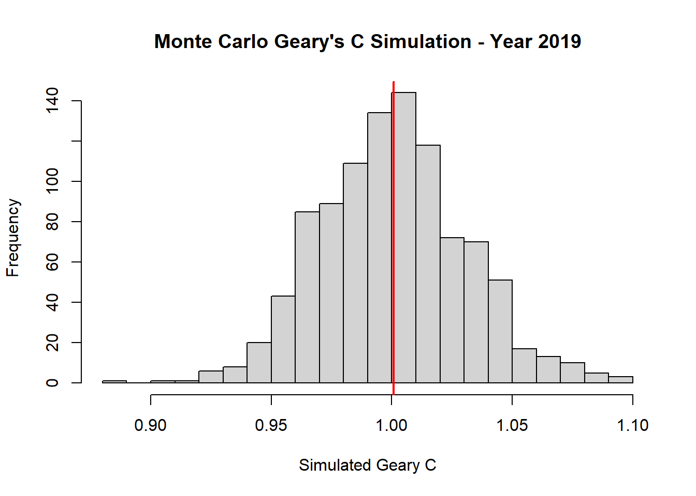
Completed year: 2019 Processing year: 2020
Geary C test under randomisation
data: yearly_data$revenue_all
weights: weights_list_year
Geary C statistic standard deviate = -0.42282, p-value = 0.6638
alternative hypothesis: Expectation greater than statistic
sample estimates:
Geary C statistic Expectation Variance
1.026852983 1.000000000 0.004033434
Monte-Carlo simulation of Geary C
data: yearly_data$revenue_all
weights: weights_list_year
number of simulations + 1: 1000
statistic = 1.0269, observed rank = 718, p-value = 0.718
alternative hypothesis: greater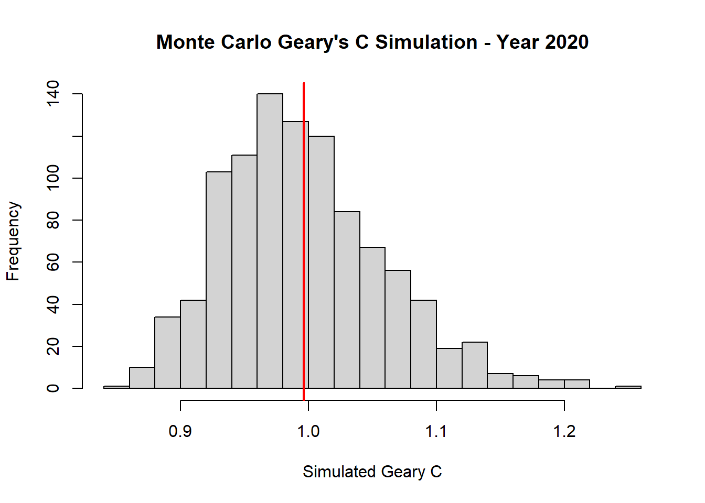
Completed year: 2020 Processing year: 2023
Geary C test under randomisation
data: yearly_data$revenue_all
weights: weights_list_year
Geary C statistic standard deviate = 1.4623, p-value = 0.07183
alternative hypothesis: Expectation greater than statistic
sample estimates:
Geary C statistic Expectation Variance
0.875926148 1.000000000 0.007199045
Monte-Carlo simulation of Geary C
data: yearly_data$revenue_all
weights: weights_list_year
number of simulations + 1: 1000
statistic = 0.87593, observed rank = 52, p-value = 0.052
alternative hypothesis: greater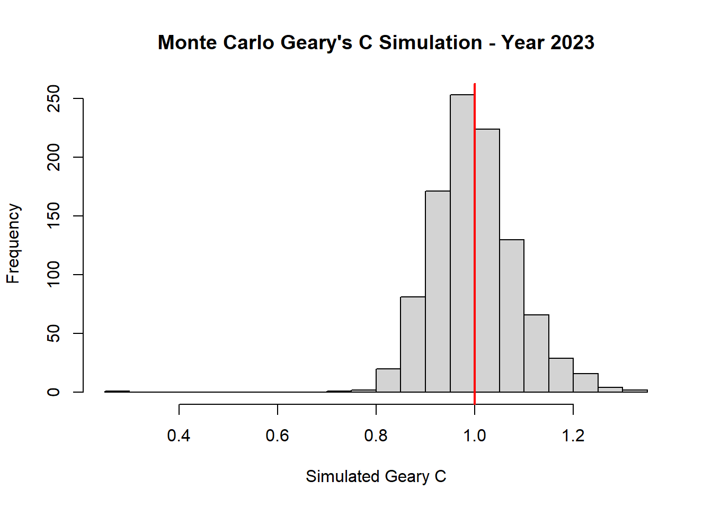
Completed year: 2023 In this section, we apply spatially constrained clustering using the ClustGeo method for each year of tourism revenue data. After filtering the data by year, a proximity matrix is computed based on the revenue, and a distance matrix is derived from the spatial data. The choicealpha function is used to identify the optimal balance between spatial and non-spatial clustering constraints. We then perform hierarchical clustering with spatial constraints, and the resulting clusters are added back to the dataset. The spatial clusters are visualized using the tmap package. Additionally, hierarchical and spatially constrained clusters for each year are displayed side by side to compare the results of the two clustering methods, providing insight into how spatial constraints affect cluster formation.
for (year in c(2019, 2020, 2023)) {
yearly_data <- tourism_economy_sf[tourism_economy_sf$year == year, ]
if (year == 2019) {
shan.nb <- nb_2019
} else if (year == 2020) {
shan.nb <- nb_2020
} else if (year == 2023) {
shan.nb <- nb_2023
}
weights_list <- nb2listw(shan.nb, style = "W", zero.policy = TRUE)
cat("Processed neighbors and weights for year:", year, "\n")
}Processed neighbors and weights for year: 2019
Processed neighbors and weights for year: 2020
Processed neighbors and weights for year: 2023 for (year in c(2019, 2020, 2023)) {
# 根据年份选择对应的邻接矩阵
if (year == 2019) {
weights_list <- nb2listw(nb_2019, style = "W", zero.policy = TRUE)
} else if (year == 2020) {
weights_list <- nb2listw(nb_2020, style = "W", zero.policy = TRUE)
} else if (year == 2023) {
weights_list <- nb2listw(nb_2023, style = "W", zero.policy = TRUE)
}
yearly_data <- tourism_economy_sf[tourism_economy_sf$year == year, ]
local_moran <- localmoran(yearly_data$revenue_all, weights_list)
yearly_data$Ii <- local_moran[, 1]
yearly_data$Pr_ii <- local_moran[, 5]
local_moran_map <- tm_shape(yearly_data) +
tm_fill(col = "Ii", style = "pretty", palette = "RdBu", title = paste("Local Moran's I - Year", year)) +
tm_borders(alpha = 0.5)
local_moran_p_map <- tm_shape(yearly_data) +
tm_fill(col = "Pr_ii", breaks = c(-Inf, 0.001, 0.01, 0.05, 0.1, Inf), palette = "-Blues", title = "Local Moran's I p-values") +
tm_borders(alpha = 0.5)
tmap_arrange(local_moran_map, local_moran_p_map, asp = 1, ncol = 2)
yearly_data$lag_revenue <- lag.listw(weights_list, yearly_data$revenue_all)
quadrant <- vector(mode = "numeric", length = nrow(local_moran))
DV <- yearly_data$lag_revenue - mean(yearly_data$lag_revenue)
LM_I <- local_moran[, 1]
signif_level <- 0.05
quadrant[DV < 0 & LM_I > 0] <- 1
quadrant[DV > 0 & LM_I < 0] <- 2
quadrant[DV < 0 & LM_I < 0] <- 3
quadrant[DV > 0 & LM_I > 0] <- 4
quadrant[local_moran[, 5] > signif_level] <- 0
yearly_data$quadrant <- quadrant
LISA_map <- tm_shape(yearly_data) +
tm_fill(col = "quadrant", style = "cat",
palette = c("#ffffff", "#2c7bb6", "#abd9e9", "#fdae61", "#d7191c")[c(sort(unique(quadrant)) + 1)],
labels = c("insignificant", "low-low", "low-high", "high-low", "high-high")[c(sort(unique(quadrant)) + 1)]) +
tm_borders(alpha = 0.5)
print(LISA_map)
cat("Completed Local Moran's I and LISA analysis for year:", year, "\n")
}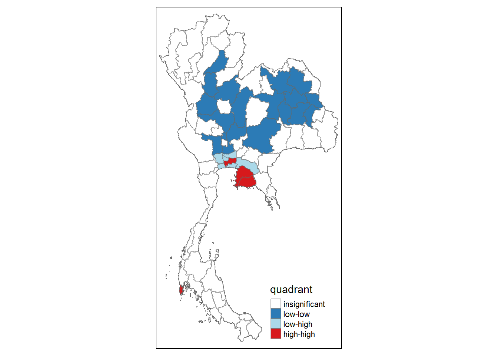
Completed Local Moran's I and LISA analysis for year: 2019 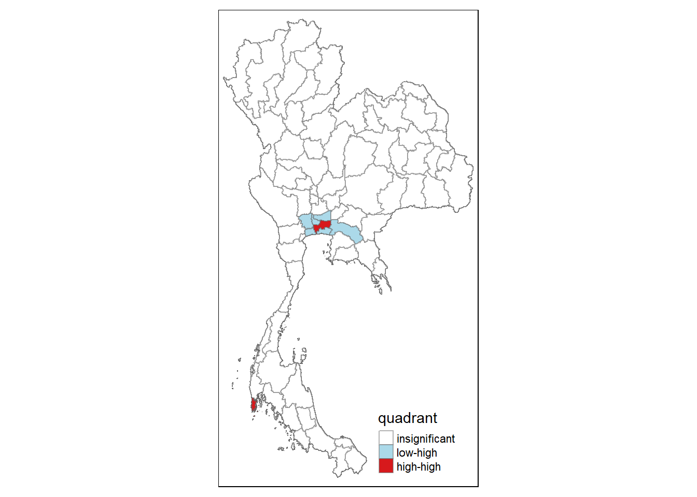
Completed Local Moran's I and LISA analysis for year: 2020 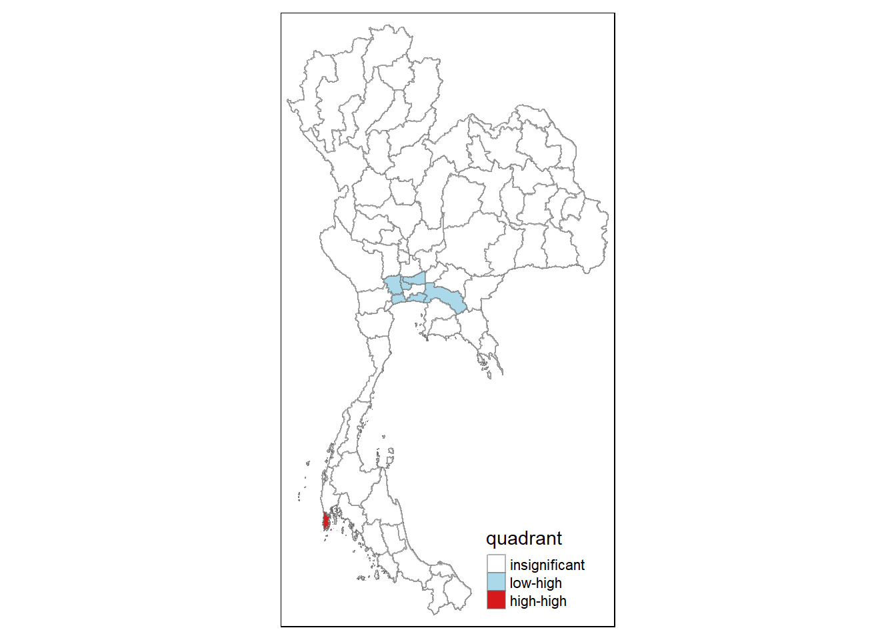
Completed Local Moran's I and LISA analysis for year: 2023 In this section, we apply spatially constrained clustering using the ClustGeo method for each year of tourism revenue data. After filtering the data by year, a proximity matrix is computed based on the revenue, and a distance matrix is derived from the spatial data. The choicealpha function is used to identify the optimal balance between spatial and non-spatial clustering constraints. We then perform hierarchical clustering with spatial constraints, and the resulting clusters are added back to the dataset. The spatial clusters are visualized using the tmap package. Additionally, hierarchical and spatially constrained clusters for each year are displayed side by side to compare the results of the two clustering methods, providing insight into how spatial constraints affect cluster formation.
for (year in c(2019, 2020, 2023)) {
if (year == 2019) {
weights_list <- nb2listw(nb_2019, style = "B", zero.policy = TRUE)
} else if (year == 2020) {
weights_list <- nb2listw(nb_2020, style = "B", zero.policy = TRUE)
} else if (year == 2023) {
weights_list <- nb2listw(nb_2023, style = "B", zero.policy = TRUE)
}
yearly_data <- tourism_economy_sf[tourism_economy_sf$year == year, ]
gi_fixed <- localG(yearly_data$revenue_all, weights_list)
yearly_data$gi_stat <- as.numeric(gi_fixed)
hotspot_map <- tm_shape(yearly_data) +
tm_fill(col = "gi_stat",
style = "pretty",
palette = "-RdBu",
title = paste("Hot/Cold Spots (Gi*) -", year)) +
tm_borders(alpha = 0.5)
print(hotspot_map)
cat("Completed Getis-Ord Gi* hotspot analysis for year:", year, "\n")
}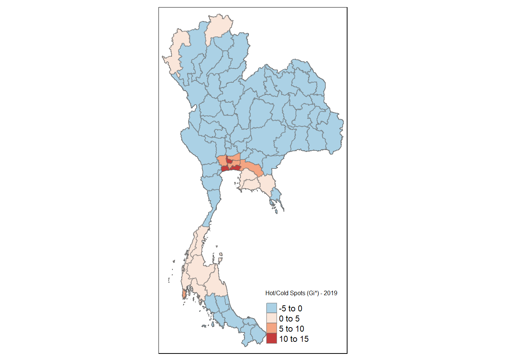
Completed Getis-Ord Gi* hotspot analysis for year: 2019 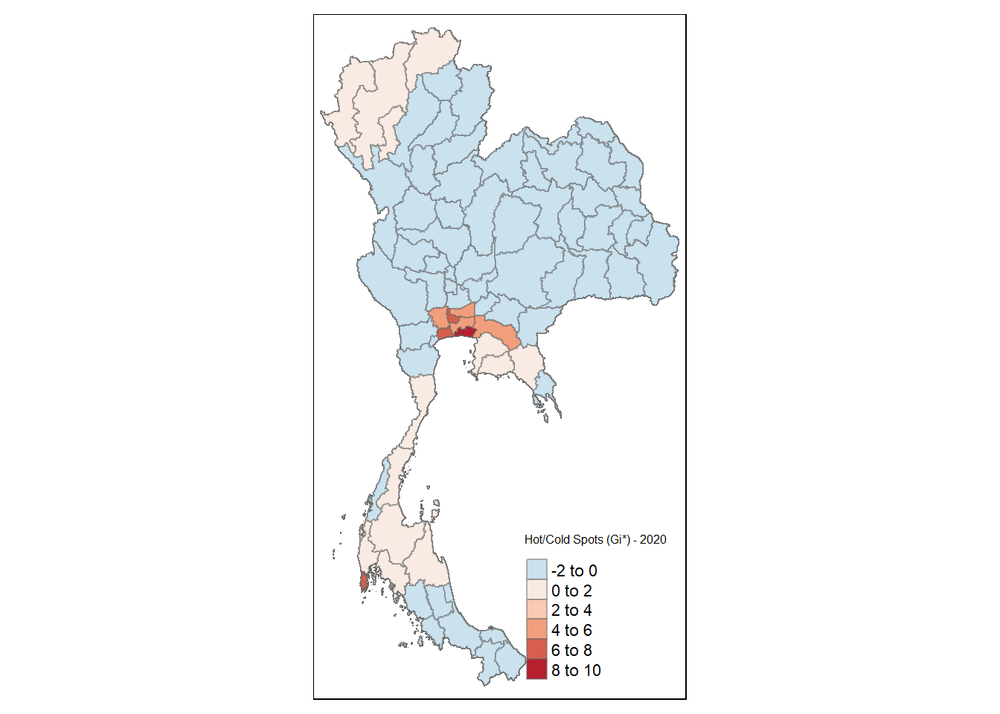
Completed Getis-Ord Gi* hotspot analysis for year: 2020 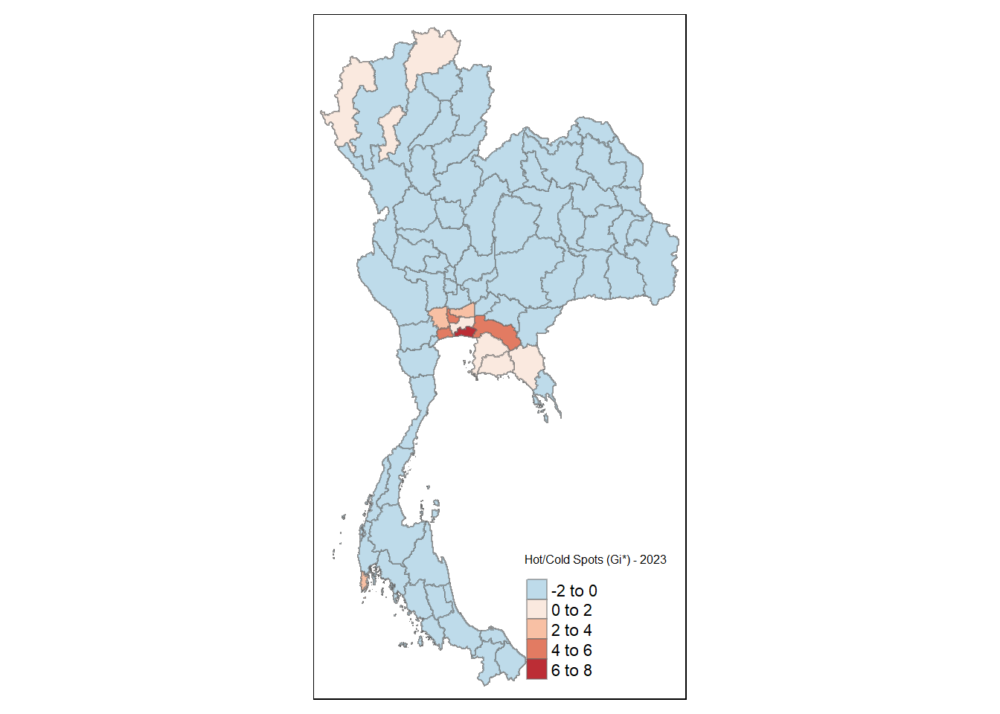
Completed Getis-Ord Gi* hotspot analysis for year: 2023 In this section, we conduct a Getis-Ord Gi* hotspot analysis to identify hot and cold spots of tourism revenue for each year. For each year, the dataset is filtered, and the centroids of the provinces are used to create a distance-based neighbors list, considering only neighboring provinces within a 50 km threshold. The neighbors’ spatial weights are computed, and the Getis-Ord Gi* statistic is calculated for the revenue_all variable, revealing statistically significant clusters of high (hot spots) and low (cold spots) values. The Gi* results are added to the dataset and visualized on a map, using a red-blue color palette to represent the hot and cold spots for each year. This analysis highlights spatial patterns in tourism revenue across different time periods.
The tourism sector in Thailand has played a critical role in the country’s economic development, contributing significantly to GDP and job creation. However, the COVID-19 pandemic has severely impacted this sector, with a dramatic decline in tourist arrivals and revenue. The government’s response, including financial relief measures and phased recovery strategies, is crucial to mitigating these losses. The emphasis on hygiene and safety standards, as well as potential travel bubbles with key regional markets, demonstrates Thailand’s focus on restoring consumer confidence and revitalizing its tourism industry.
From a spatial analysis perspective, the fluctuations in tourism activity, especially before and after the pandemic, could be examined using geospatial techniques such as global and local spatial autocorrelation, hotspot analysis, and clustering methods. These analyses can reveal spatial patterns and dependencies in tourism recovery, which are influenced by factors such as regional infrastructure, tourism policies, and travel restrictions.
In conclusion, understanding these spatial patterns will be essential in guiding Thailand’s post-pandemic tourism recovery efforts, ensuring resources are allocated effectively to the most impacted regions. The strategic use of spatial data and analytics will provide insights into how different provinces recover and how to stimulate both domestic and international tourism in a sustainable and resilient manner.